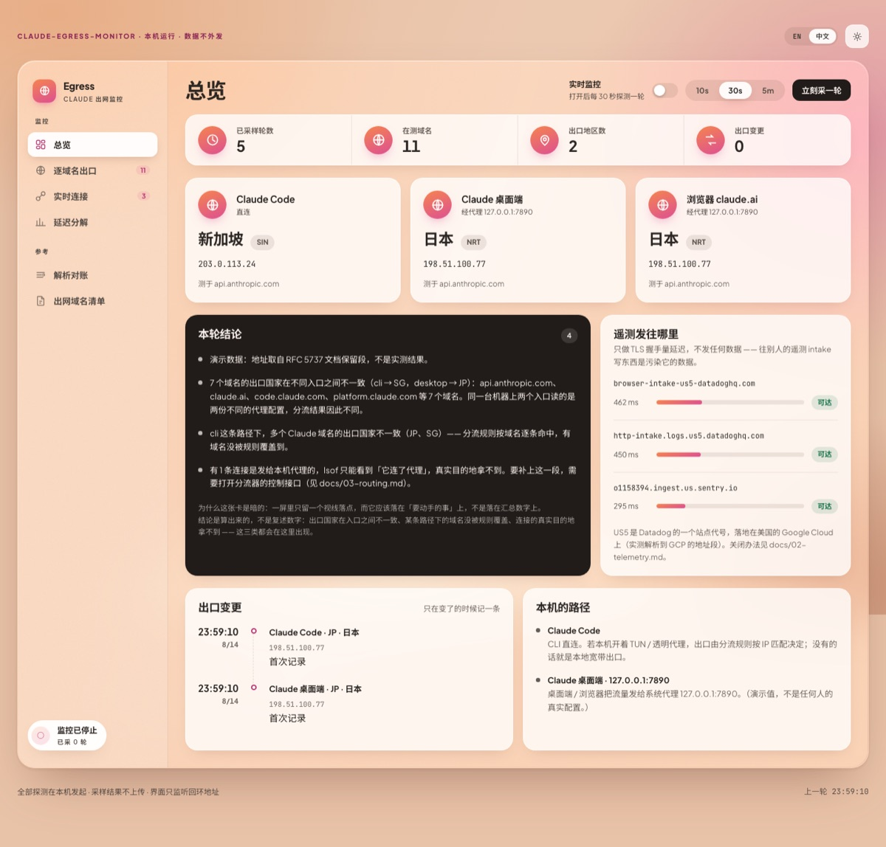
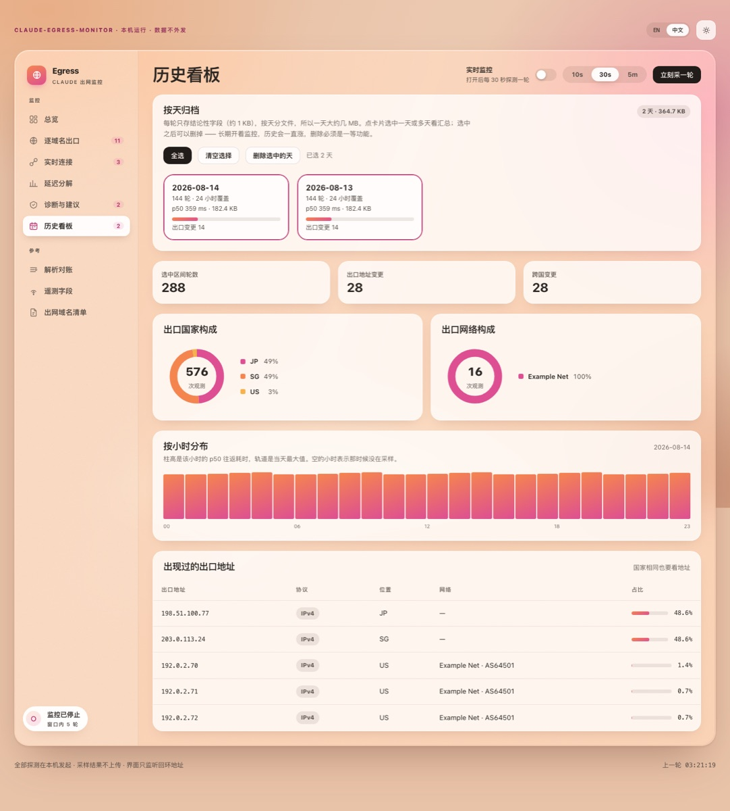

Claude Code、Claude 桌面端、浏览器里的 claude.ai —— 它们读的不是同一份代理配置， 所以出口 IP 和落地地区可以不一样，而它们都不会告诉你这件事。 这个工具把它量出来：每个入口的出口地址、落地国家、边缘机房、分段延迟、 遥测发往哪个地区，以及 Claude 的进程此刻实际连着谁。 Claude Code, the Claude desktop app and claude.ai in a browser do not read the same proxy configuration — so their exit IPs and landing regions can differ, and none of them tells you. This tool measures it: per-entry exit address, country, edge datacenter, phase-by-phase latency, where the telemetry goes, and what Claude's processes are connected to right now.
全部探测在本机发起 · 采样结果不上传到任何地方 · 界面只监听回环地址 · 监控默认关闭 All probing is local · samples are never uploaded · the UI binds loopback only · monitoring is off by default
你在系统设置里配好代理，桌面端立刻生效，而 Claude Code 完全不知道它存在。 再叠上分流器「按 IP 匹配」和「按域名匹配」是两套不同的过程 —— 同一个域名从 CLI 出去和从桌面端出去，命中的规则可以不同，落地国家也就不同。 You configure a proxy in System Settings; the desktop app picks it up immediately and Claude Code never learns it exists. Add that a rule-based router matches by IP on one path and by domain on the other, and the same hostname can land in two different countries depending on which entry point sent it.
一个专门监控网络流量的工具，不该在你没同意之前就开始发请求。所以开关在页面右上角， 默认关闭，采样间隔可选 10 秒 / 30 秒 / 5 分钟。所有面板在没数据时显示的是「还没采样」， 而不是编一个 0 出来。 A tool whose whole job is watching network traffic should not send requests before you say so. The switch sits in the top bar, off by default, with a 10s / 30s / 5m interval. Every panel shows “nothing sampled yet” instead of inventing a zero.

总览 —— 三个入口各一张卡，暗卡放算出来的结论，右边是遥测目的地。点开可交互的 demo。 Overview — one card per entry point, the dark card holds the computed findings, telemetry destinations on the right. Click for the interactive demo.
历史看板 —— 长期开着监控之后，按天归档的汇总。可以选看哪几天，也可以删掉哪几天省空间。 History — daily rollups once monitoring has been on for a while. Pick which days to view, delete the ones you no longer need.
doctor 不联网，只读本机配置，先让你看清有哪几条路径。
确认无误再跑 probe 发第一轮探测。界面起来之后监控还是关的，
要自己在页面上打开。
doctor sends nothing — it only reads local configuration so you can see
which paths exist. Then probe fires the first round. Even with the UI up,
monitoring stays off until you turn it on.
# 拿下来
git clone https://github.com/TbusOS/claude-egress-monitor.git
cd claude-egress-monitor
# 1. 看清本机三个入口各走哪条路（不发任何探测）
python3 -m cem doctor
# 2. 立刻采一轮，打印在终端
python3 -m cem probe
# 3. 起界面（监控默认关闭，在页面上按开关启动）
python3 -m cem serve --open
# 只想看界面长什么样、不联网：
python3 -m cem serve --demo --open每一章都给出可以自己跑一遍的复现命令，不要求你相信这里写的任何一句话。 章节正文目前只有中文，欢迎提 PR 翻译。 Every chapter ships commands you can run yourself — you are not asked to take any of this on faith. The chapters are currently Chinese only; translation PRs are very welcome.
这四条不是风格偏好，是这个工具能不能被信任的前提。完整的模块地图、 怎么加域名 / 加数据源 / 加诊断规则，都在 CONTRIBUTING 里。 These are not style preferences — they are the conditions under which this tool can be trusted at all. The full module map and how to add a domain, a data source or a diagnostic rule live in CONTRIBUTING.
出口 IP、代理端口、内网地址、运营商名、城市 —— 包括测试样本和代码注释里。 演示数据一律用 RFC 5737 文档保留段。 Exit IPs, proxy ports, private addresses, ISP names, cities — including inside test fixtures and code comments. Demo data always uses RFC 5737 documentation ranges.
四档置信度。判不出就写判不出 —— 尤其当猜错的方向不对称时， 把机房 IP 猜成家宽会让人以为风险更低。 Four levels. Unknown is written as unknown — especially where being wrong is asymmetric: calling a datacenter IP “home broadband” makes the risk look smaller than it is.
没有的值渲染成破折号，绝不用 0 或上一轮的值顶上。 一个假的 0 会被读成「延迟 0 毫秒」。 A missing value renders as a dash, never as 0 or last round's figure. A fake zero reads as “0 ms latency”.
对照组域名混进结论会产生假警报，引导人去改一份没问题的配置。 假警报比漏报更消耗信任。 Letting a control-group domain into the conclusions produces false alarms that send people to edit a configuration that was fine. False alarms cost more trust than misses.